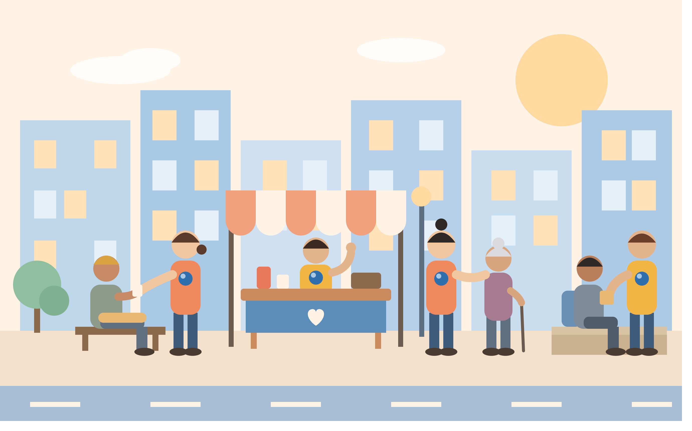
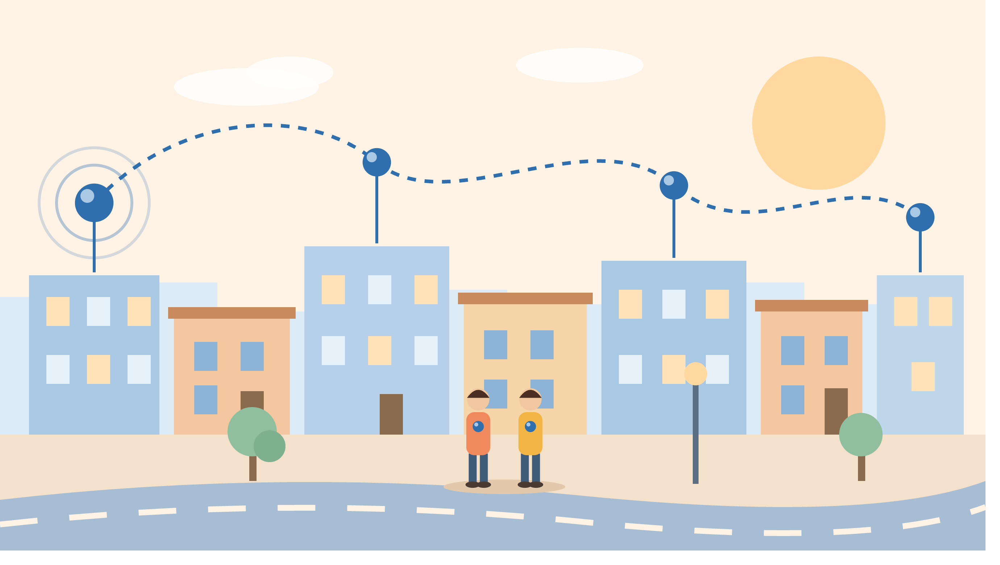
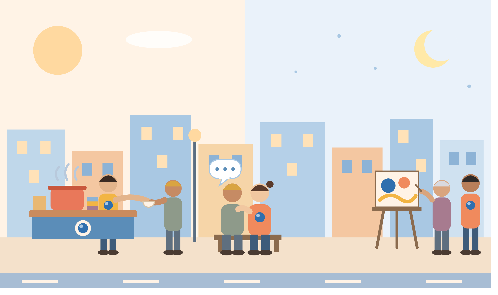
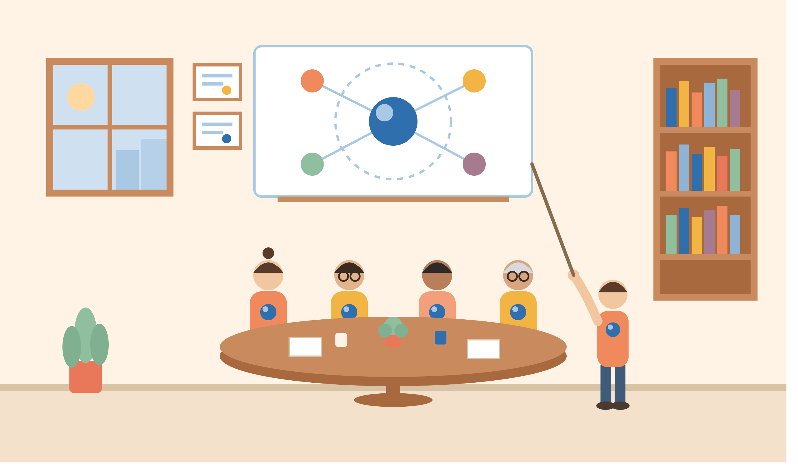
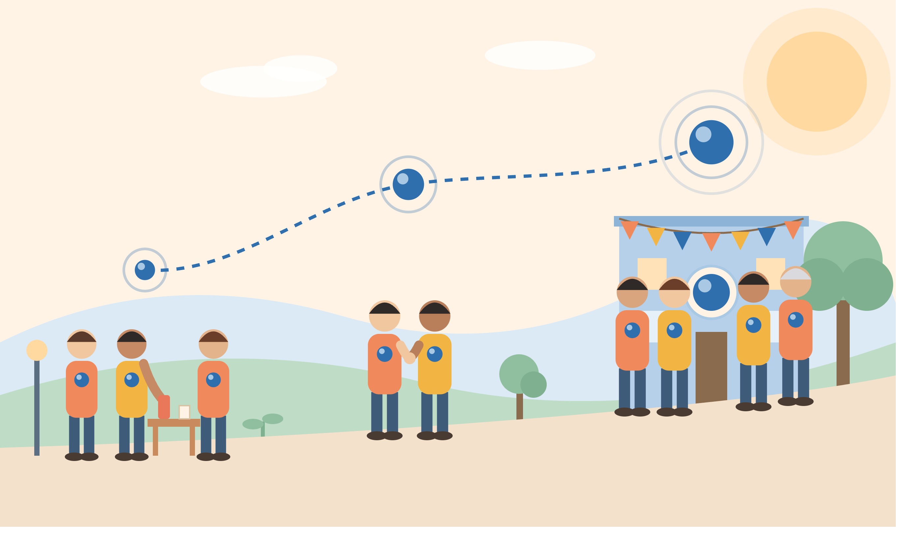

Desde la perspectiva del cosmos, nuestra Tierra es apenas un punto azul pálido suspendido en un rayo de sol. De la misma manera, en el bullicio y la frialdad de las grandes urbes, existen vidas que la indiferencia social intenta desvanecer. Sin embargo, un punto azul nunca deja de brillar por el hecho de ser pequeño; solo necesita que alguien detenga la mirada para reconocer su brillo. En la Asociación Punto Azul, entendemos que cada persona es un universo irrepetible, con una historia que merece ser escuchada sin juicios ni imposiciones.

La Asociación Punto Azul surge con el firme compromiso de ofrecer un espacio seguro, digno y de acogida para personas que atraviesan situaciones de extrema vulnerabilidad, especialmente aquellas que se encuentran en estado de calle. Como entidad sin ánimo de lucro, entendemos que la exclusión social rara vez viene sola, por lo que centramos gran parte de nuestros esfuerzos en abordar de manera integral problemáticas complejas como las adicciones y los trastornos de salud mental. Nuestro equipo trabaja cada día desde la empatía y el respeto absoluto para tender un puente de apoyo que permita a cada individuo recuperar el control de su vida, su bienestar y su integración en la sociedad.

La Asociación Punto Azul dio sus primeros pasos en los barrios más vulnerables de la ciudad, un entorno marcado por la desigualdad social y el abandono institucional. Desde nuestros inicios, hemos recorrido diversas zonas urbanas detectando los puntos críticos donde la exclusión y la falta de recursos golpean con mayor dureza. Cada rincón en el que hemos operado nos ha enseñado una realidad distinta, permitiéndonos adaptar nuestra ayuda a las necesidades específicas de cada comunidad. Este recorrido geográfico y social ha consolidado nuestra presencia en las calles, convirtiéndonos en un referente de cercanía y apoyo constante para quienes más lo necesitan.

Nuestra labor diaria va mucho más allá de ofrecer asistencia básica; consiste en tejer redes de confianza y respeto con las personas en situación de calle. En nuestro tiempo de intervención directa realizamos rutas nocturnas y diurnas para entregar suministros de primera necesidad, ropa y alimentos calientes. Sin embargo, el núcleo de nuestra actividad es la escucha activa y la contención emocional, brindando un espacio donde cada persona se siente escuchada y valorada. Fomentamos talleres de integración, actividades artísticas y espacios de socialización que buscan devolver la dignidad y fomentar un sentido de comunidad entre los participantes.

El equipo de la Asociación Punto Azul está compuesto por profesionales y voluntarios formados rigurosamente en el ámbito del trabajo social, la psicología clínica y el acompañamiento en adicciones. Nos hemos preparado académicamente en instituciones especializadas en salud mental, intervención en crisis y reducción de daños, asegurando que cada protocolo de actuación sea seguro y empático. Estudiamos de forma continua las nuevas metodologías de apoyo psicosocial para entender las complejas raíces de la drogadicción y la vulnerabilidad extrema. Esta sólida base teórica y práctica nos permite ofrecer una atención integral que respeta los procesos individuales de recuperación sin juzgar ni imponer.

El camino hasta consolidar la Asociación Punto Azul ha sido un reto constante de resiliencia, aprendizaje y amor. Hemos superado barreras burocráticas, escasez de recursos y momentos de profunda incertidumbre, siempre guiados por la convicción de que nadie es desechable.